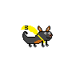
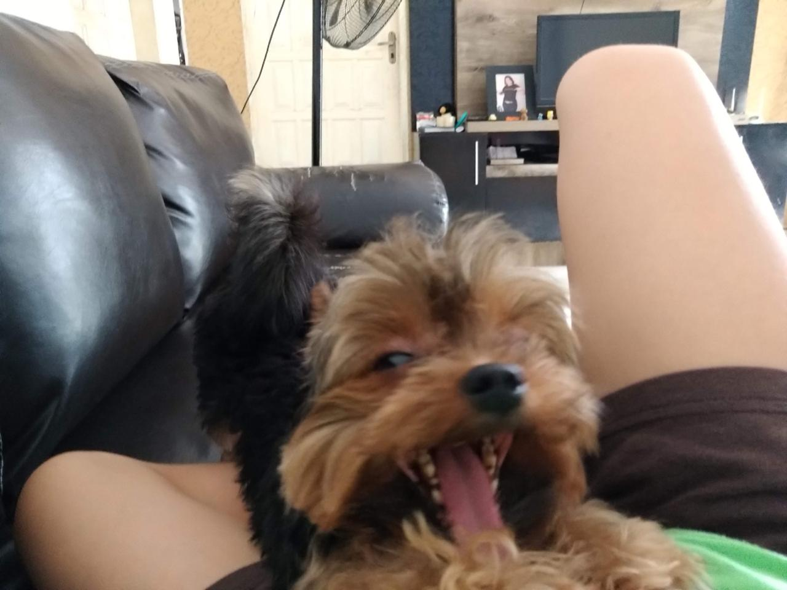
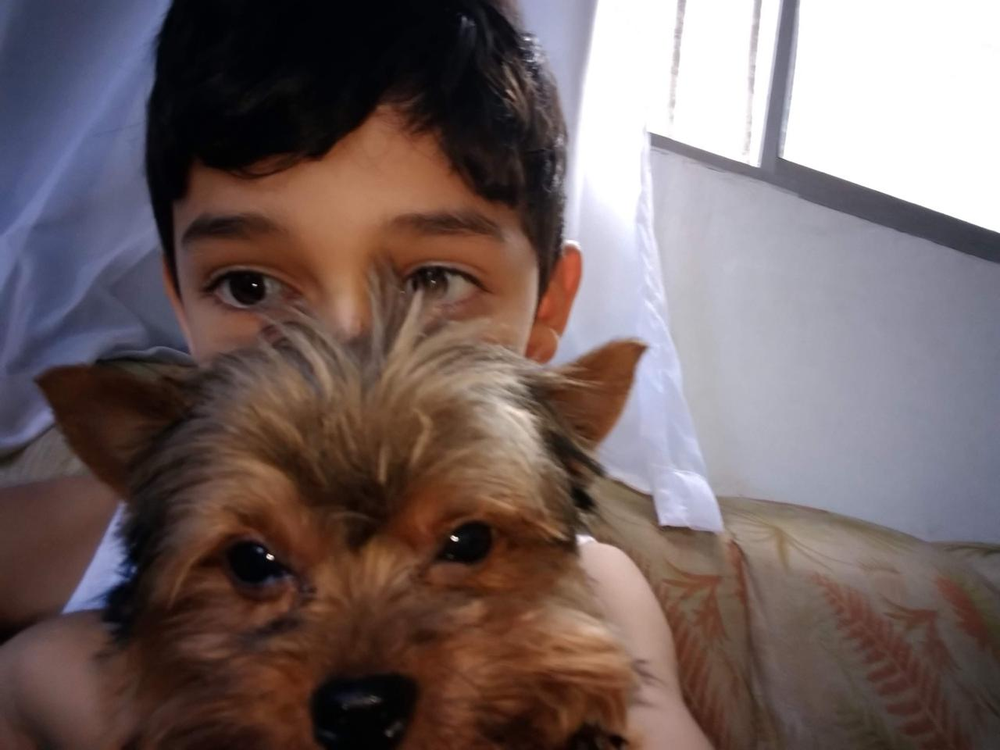
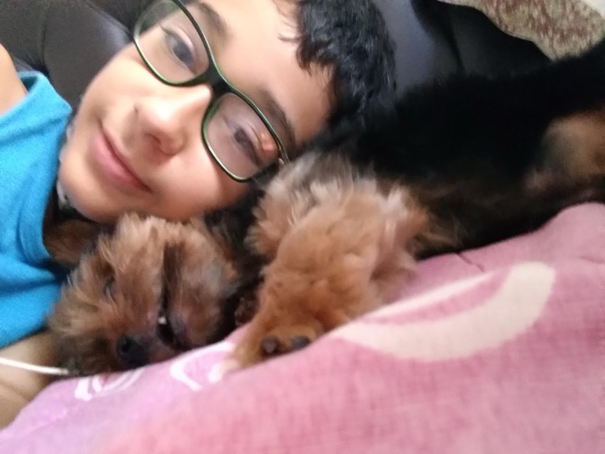
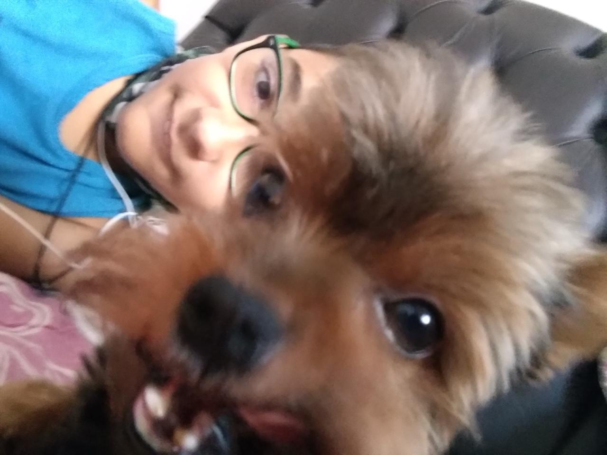
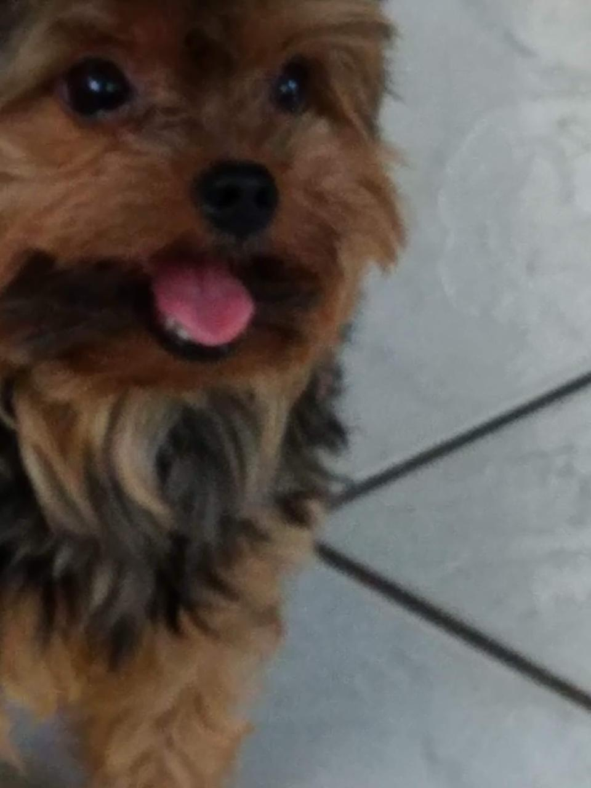

Mailou foi o meu cachorro desde os meus 7 anos. Ele cresceu comigo, brincava comigo, brigava também, mas era o meu parceiro para tudo.
Ele cochilava comigo as vezes, no sofá, ou latia nas intensas chuvas, pois sabia que minha mãe tinha medo. Mesmo sendo um Yorkshire, nunca temeu bater de frente com um pastor alemão se a gente se sentia ameaçados.
E sabe, a medida em que vamos crescendo, vamos deixando as coisas de realmente importam de lado, e ele importava para mim. Eu fui crescendo, e dando outras prioridades para a minha vida, tanto no ambito pessoal, tanto no profissional, mas se eu pudesse voltar atrás, eu faria tudo diferente.
Eu aproveitaria mais com ele, brincaria mais com ele, deixava ele mais pertinho da minha vida sabe? Mesmo estando ali, no quintal, o tempo todo.
Eu nunca pensaria que um dia ele REALMENTE fosse embora assim, tão de repente, tão cedo. Na realidade, acho que eu sabia, mas não estava preparado para perder ele.
No dia em que ele morreu, eu fiquei um tempo com ele, mas depois fui a escola, mas sentia que nao devia ter feito isso, e sabe? Isso fica no meu peito até hoje, sou culpado por não ter dado a devida atenção, não ter amado mais, cuidado mais, ter tido mais memórias com ele, mais fotos com ele.
Porque agora, no fim de tudo, o me resta dele é lembranças, e pra não me esquecer das mesmas, criei este site.
Não pra se tornar algo pro público, mas sim algo pra mim, se eu quiser voltar em alguns dias, meses ou anos. Eu ainda ter esta carta, as fotos, os vídeos e este jogo, como se realmente eu pudesse tê-lo comigo, mais uma vez, só que desta vez em forma de código.
"Ei meu filho, teteu te ama viu? Me perdoa por tudo, eu poderia ter sido melhor para você, mas não fui bom o bastante e agora, olha onde você está. Me perdoe que nos seus ultimos momentos, eu não estava lá, por puro mero egoísmo. Espero que pelo menos onde quer que esteja, seja um lugar bom. Obrigado por fazer parte da minha vida, obrigado por me ver crescer e me fazer bem, por cuidar de mim tão bem, melhor até que gente do meu sangue."
"Eu te amo, meu pequeno filho."
Pilker, Matheus - 2026




